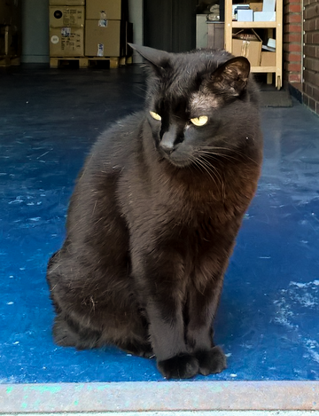

Razas de Gatos

Bombay
Descripción: Los ojos dorados y el pelaje negro brillante del Bopmbay son absolutamente
sorprendentes. Es probable que se vincule más con un miembro de la familia; el Bombay lo seguirá
de una habitación a otra y casi siempre tendrá algo que decir sobre lo que esté haciendo, le
encantará que lo lleven a todas partes, a menudo sobre el hombro de su cuidador.
Información
Rango de Vida: 12 a 16 años
Temperamento: Cariñoso, Dependiente, Gentil, Inteligente, Juguetón
Amigable con niños: 4
Amigable con perros: 5
Origen: Estados Unidos
Más información en Wikipedia: Link